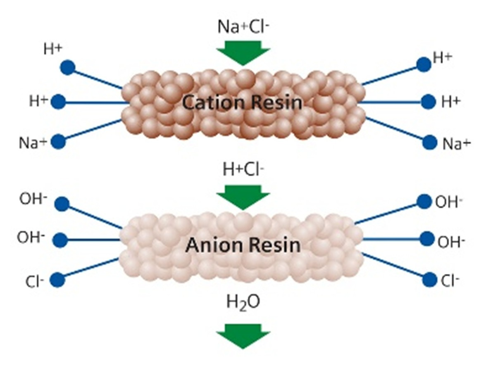

Il existe plusieurs méthodes de purifier l’eau. Certaines entre eux ne sont plus utilisés, ou ont des alternatives plus modernes ; mais la plupart des méthodes dont on va parler dans cette partie sont des méthodes largement utilisés dans plusieurs domaines industrielles ou domestiques. [17]
La distillation est une méthode de séparation d’un mélange liquide, qui est basé sur les températures d'ébullition différentes des substances dans le mélange. En chauffant le mélange, dans notre cas l’eau impure, on atteint premièrement la température d’ébullition de l’eau. Dans ce cas, l’eau vaporise et est transporté dans un autre récipient où elle est encore condensée ; effacé de son résidu, qui est resté dans le premier récipient. [18]
La distillation est un des façons de dessalement de l’eau de mer plus utilisées. Cette façon consiste à évaporer l’eau de mer, soit en utilisant la chaleur des rayons solaires, soit en la chauffant dans une chaudière. L’eau dessalé est maintenant prête pour la consommation humaine. [19]
Ce processus utilise des lampes UV spéciales qui émettent une lumière UV d'une longueur d'onde particulière pour purifier l’eau d’organismes dangereux pour la santé, en cas de consommation.
Ces ondes lumineuses UV appelées « fréquence germicide » perturbent l'ADN des micro-organismes, qui tuent tous les microbes et germes. Ces ondes lumineuses UV sont, elles sont capables de tuer tous germes. [20]
La purification UV est sûre, rapide, fiable mais en même temps assez cher à cause des équipements qu’elle nécessite. C’est la raison principale pour laquelle elle n’est pas largement utilisé et appliqué dans la vie quotidienne et industrielle.
La chloration est un moyen simple et efficace pour désinfecter l’eau afin de la rendre potable. Elle consiste à introduire des produits chlorés dans de l’eau pour tuer les micro-organismes qu’elle contient. Après un temps d’action d’environ 30 minutes, l’eau est normalement potable. Elle le reste pendant quelques heures ou jours.
C’est un moyen à faible coût mais elle n’est pas assez efficace pour être une façon de purifier l’eau. La chloration désinfecte donc l’eau mais ne la purifie pas entièrement. [21]
 Il s’agit d’un processus qui élimine les substances électriquement lourdes (donc ionisées) dissoutes dans l’eau. Le procédé de déionisation est assuré par une « résine d’échange ionique ». De plus, pour éliminer tous les ions de l’eau, on peut utiliser une combinaison de résines, l’une anionique et l’autre cationique, toutes deux branchées en série. [22]
L’ozonation de l'eau consiste en l'introduction d'ozone dans l'eau afin d’assurer sa désinfection. Il s'agit d'un traitement chimique qui utilise les propriétés désinfectantes de l'ozone, qui détruit les particules organiques. L'ozonation permet de détruire la majorité de micropolluants dans l'eau qui ont des effets sur sa goût, odeurs ou couleur. [23]
L’osmose inverse (ou l’osmose inversée) est une méthode de filtrage de l’eau de façon naturelle qui permet de filtrer les impuretés dans l’eau en ne laissant passer que les molécules d’eau. Pour cela, on utilise la pression hydraulique pour forcer l’eau à circuler à travers une membrane semi perméable. On voit le même principe dans la membrane cellulaire dans toutes les corps des êtres vivants. Cette membrane retient les particules contenues dans l’eau et que la différence de pression empêche de traverser.
L’osmose inverse permet donc de filtrer la majorité des particules présentes dans l’eau du robinet, et de diminuer sa dureté et d’en supprimer les polluants indésirables comme SO42-, K+, Hg2+, Ba2+, Zn2+, Fe2+, Fe3+, Ca2-, virus et bactéries. Ce processus permet d’obtenir une eau pure et potable rapidement et à baisse coût. [24]